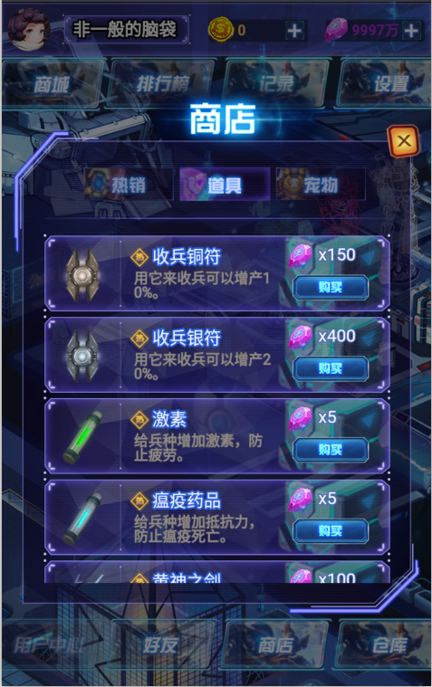

基地介绍
-
新注册玩家首次登录游戏，系统会赠送初级基地，跟一块初级兵营。
基地共分为12个等级，基地每次升级将获赠一块初级兵营。
基地一共可以升级11次。可以建造12个兵营。
兵营介绍
-
新注册玩家首次登录游戏，系统会赠送初级基地，跟一个初级兵营。
基地每次升级，都将获赠一个初级兵营。
兵营数量跟基地级别一致，最多12个。每个兵营由初始级别升级到最高级，兵营一共6级。名称分别为：
初级兵营→中级兵营→高级兵营→神机营→水火营→战神营。
士兵介绍
-
士兵由兵种研发而成，每次研发的士兵种类可能不同，以巩固14种士兵。各士兵等级不同，等级越高则价值也越高（具体价格根据市场行情价格为准）。
基地、兵营升级都需要用到士兵（具体数量依据游戏上线后官网发布数量为准）。士兵可以买卖。也是交易市场唯一流通的道具。
名称 名称 名称 名称 名称 艾斯特 雷斯 穆得 科亚 奥巴斯
名称 名称 名称 名称 名称 玄甲 伦特尔 讯影 克罗 羽刃
名称 名称 名称 名称 名称 亚特 圣洛丽 卡拉 狂蜂 兵种 

守卫先锋
-
每位玩家的基地都有五位守卫先锋守护。
激活守卫先锋需要不同的宝石，守护作用也不相同。
激活守卫先锋需要宝石。
宝石的获取方式：收获时随机获得或者通过商店购买。

名称 效果 技能时间 补给员 保护所有兵营不会能源匮乏 48小时 指挥官 保障兵营稳定工作，减少故障 48小时 统领 保护所有兵营不受外敌困扰 48小时 巨人 保证所有兵营的产兵数量最大化 48小时 狂信徒 不允许其他兵种存在。可收编神秘兵种 一次培养
星灵介绍
-
玩家注册登录以后系统会赠送一个初级星灵，普通机油10瓶，通过点击雷吉吉，可以观察雷吉吉的信息，技能。（默认昵称为“雷吉吉”），玩家可以给自己的星灵更换一次名字。星灵目前功能：等级，训练，加油，技能，属性，战斗。
默认昵称为“雷吉吉”，玩家可以给自己的星灵更换一次名字。通过点击雷吉吉，可以观察雷吉吉的信息，技能。
星灵目前功能：等级，训练，加油，技能，属性，战斗。
等级：初始等级为1级，通过增加普通机油或特殊机油提升雷吉吉经验。当经验槽满了以后玩家可以手动提升等级。升级后属性进行提升。
星灵等级小于基地等级2级，例如：基地8级星灵6级。。
训练：如果你不满意当前星灵的属性，还可以通过训练来提升星灵的属性值（攻击，防御，速度，幸运，生命）。
说明：训练星灵会消耗当前星灵的体力，当体力不足时，无法训练。
加油：星灵可以选择每次的品种，通过点击机油图标实现切换每次喂食机油的品种。以达到高效喂养星灵的目的。目前可以切换品种为“普通机油”，“特殊机油”2种。
技能介绍： 1：“自动收编”通过点击使用后，星灵帮您实现整个收编过程。技能时效随星灵等级提升而增加。
说明：该技能24小时只能使用1次，当天结束后，次日可以再次开启。
技能2：“自动培养”通过点击使用后，星灵帮您实现收编，培养的过程。技能时效随星灵等级提升而增加。
说明：该技能24小时只能使用1次，当天结束后，次日可以再次开启。收编时在拥有特殊收编符的玩家会附带收编效果。
技能3：“神秘兵种”通过给星灵添加“普通”或“特殊”机油，随机给该技能增加经验值，当经验值满1000后，可以使用该技能。使用后获得 “神秘兵种”道具1个。
说明：该技能经验值满后不累计，堆叠。
属性：星灵总评分：星灵各项数据的综合表现，仅做参考。并不能作为星灵在某种实用功能上的评判。
体力（生命）：星灵战斗胜负的判定，发挥当前属性 “幸运”效果的依据。
温馨提示：当体力值为“0”时，所有技能失效。星灵会伴随时间产生能源不足，从而扣除对应的生命值。当发挥属性“幸运”效果时，收编士兵也会随机扣除一定的生命值。
攻击：星灵的伤害值大小的依据。
防御：星灵抵抗伤害值的依据。
速度：星灵战斗时，作为攻击快慢的判定。
幸运：发挥星灵最大攻击的几率，提升当前基地高级兵种出现的概率。
拍卖行介绍
-
拍卖行可查看所有士兵的时时价格，根据当前的利率波动来查看市场的行情。如果玩家需要进行买卖，则需要进入网站进行买卖。
拍卖行开行时间为9点-24点。其他时间不允许查看和交易。
信息包含：今日开盘价、历史最低价、历史最高价、成交数量、涨额、涨幅。

商店介绍
-
商店是游戏交易系统，是系统出售物品、玩家买入物品的场所。
商店分为四个大类：热销类、道具类、宝箱类、星灵类。
其中宝箱开出的只有金币。
